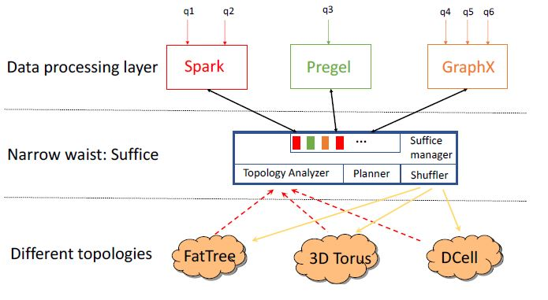
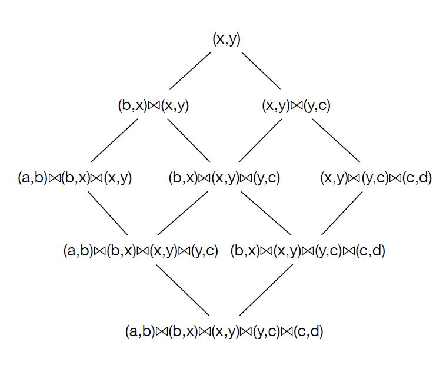
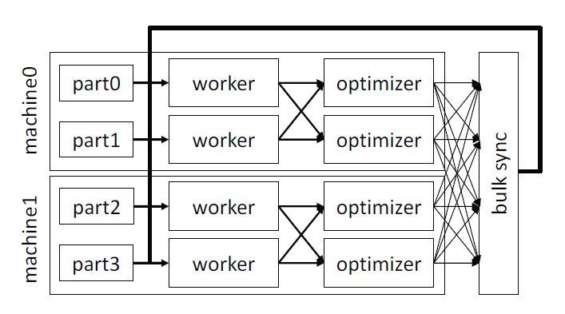
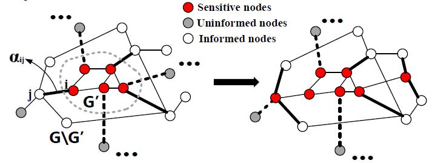
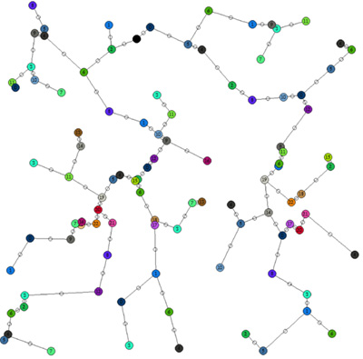
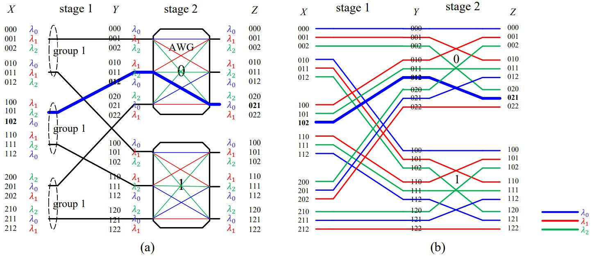
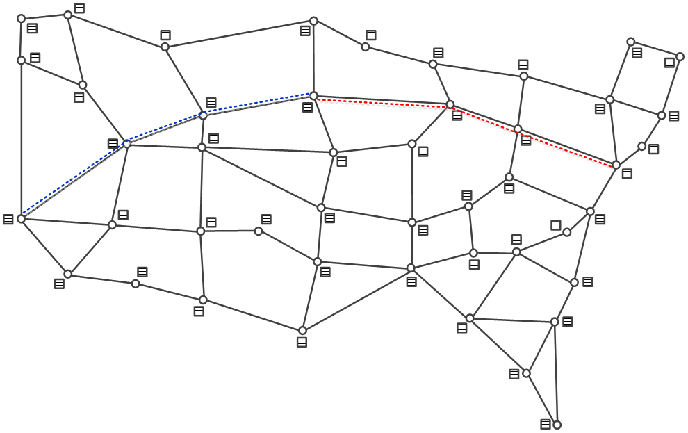
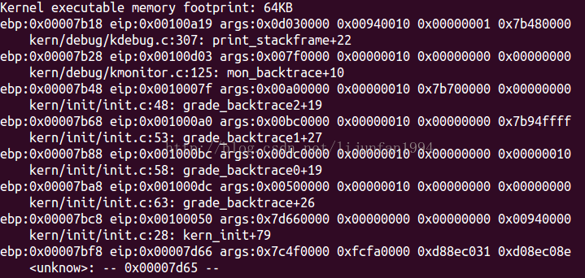
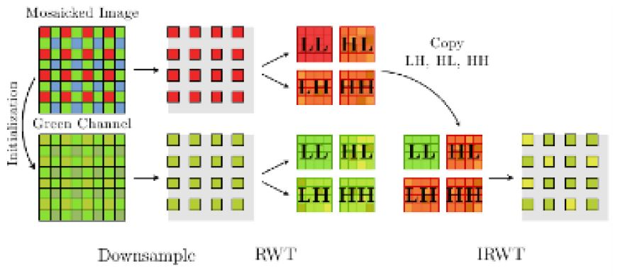
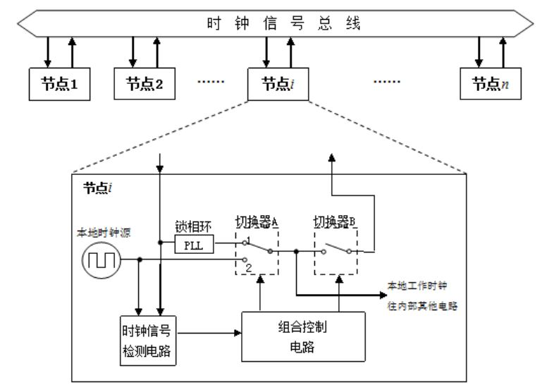

Hi, my name is Yucheng Lu, 'Eugene' in English. I am now a senior student at Department of Electronic Engineering, Shanghai Jiao Tong University. My research interests are in systems, especially in building systems for cloud computing, distributed machine learning and tackling big data problems. I also have strong interests in implementing machine learning algorithms in a variety of scenarios.
I just finished my full-time research assistant work at DSL@UPenn, where I was fortunate to work under the supervision of Prof. Boon Thau Loo and Prof. Vincent Liu. Currently, I am working at IIOT Research Center@SJTU under the supervision of Prof. Xinbing Wang and Prof. Luoyi Fu. Besides, I also had a research assistant experience at AOCSN Lab@SJTU under the supervision of Prof. Tony T. Lee and Prof. Tong Ye.
I am applying to CS/ECE PhD programs in 2018 Fall. Please feel free to drop me an email if you are interested in me!
News / Education / Publications / Research / Projects / Awards&Honors / Services / More About Me
News
Education
Shanghai Jiao Tong UniversitySep 2014 - Present
Full-time Enrolled Student
Member of Chuying Program (30 students selected in EE/CS department, which aims at cultivating future academic researcher in EE/CS area)
University of California, BerkeleyJul 2016 - Aug 2016
Visiting Student
University of PennsylvaniaJul 2017 - Present
Full-time Research Assistant
Publications
Under Review.
Qizhen Zhang, Yucheng Lu, Simran Arora, Ang Chen, Vincent Liu, Boon Thau Loo
Under Review.
Qizhen Zhang, Akash Acharya, Hongzhi Chen, Yucheng Lu, Ang Chen, Vincent Liu, Boon Thau Loo
Under Review.
Yucheng Lu, Xudong Wu, Jingfan Meng, Luoyi Fu, Xinbing Wang
Research
Suffice: Shuffle as a ServiceSep 2017
Research Assistant@Distributed System Laboratory, University of Pennsylvania

This work has been submitted to NSDI'18. Data center networks were once defined by their homogeneity. Epitomized by the ‘One Big Switch’ model, data centers allowed programmers to ignore low-level concerns such as job placement and network topology. Big data analytics frameworks thrived in this environment. Reality, however, is messy. Real data centers are often oversubscribed and heterogeneous, and recent hardware trends point toward further changes to the big switch model. In this paper, we propose to facilitate extensibility by making the ‘shuffle’ operation the narrow waist of the big data analytics stack. The resulting system, Suffice, has a simple and general interface that: (1) can be used by many big data systems with minimal changes to those systems, and (2) is compatible with a range of different network configurations. In addition to serving as a narrow waist, Suffice is also extensible with custom annotations, which we leverage to implement shuffle optimizations such as deduplication and combination of values at both the machine and rack level. Our evaluation results using Pregel and Spark show that Suffice provides portable performance that, in some cases, is an order of magnitude better than an infrastructure-agnostic approach.
DARQ: Dynamically Adaptive Recursive Queries for Large-scale Graph ProcessingAug 2017
Research Assistant@Distributed System Laboratory, University of Pennsylvania

This work has been submitted to SIGMOD'18. This paper presents DARQ, a runtime query optimization engine for distributed recursive queries geared towards efficient processing over large-scale graphs. DARQ is motivated by recursive queries that are executed over low-level graph engines, e.g., vertex-centric systems. DARQ allows per-tuple adaptive join reordering, where for every tuple generated during the processing, an optimized join order for the next iteration is determined by selecting operators that likely minimize both communication and computation costs. To that end, it adopts two cost-based optimizations for multi-way join evaluation at runtime: adaptive join ordering (AJO) and duplicateaware ordering (DAO).We prove that in certain cases, AJO promises the optimal order for multi-way joins and DAO improves the performance of AJO for other cases. The evaluations with both synthetic and real-world graphs verify that the designs of tuple-level execution and runtime join ordering are very effective. The results show that DARQ has both good up and out scalability for different types of graph queries, and on average, runtime join ordering contributes more than 2× performance speedup on real-world datasets compared to static order and is orders of magnitude faster in some cases. In some cases, DARQ can outperform state-of-the-art systems by as much as three orders of magnitude.
OLGA: An Optimization Library for Graph AnalyticsJul 2017
Research Assistant@Distributed System Laboratory, University of Pennsylvania

This work was submitted to SOSP'18. Graph analytics are simultaneously growing in scale and usage, stressing the importance of achieving good performance without manual tuning. In this paper, we explore the design of OLGA, an optimization library for graph analytics that is co-designed with the underlying graph analytics framework. Our system borrows ideas from both Internet-scale graph processing systems and centralized databases with the goal of providing concise statements for common operations, Turing-complete flexibility for custom functionality, and good performance and both cases. At the core of our proposal is our library of relational operators, which were chosen due to their generality and the fact that their optimization opportunities are well-understood though difficult to implement in a distributed setting. In particular, we focus on two novel distributed adaptations of classic SQL optimizations: (1) decentralized deduplication techniques for reducing communication overhead by computing unnecessary duplicate intermediate and final results, and (2) fine-granularity runtime adaptive optimization techniques that allows us to dynamically modify the execution plan at runtime to reduce query execution overhead, taking into account power-law distribution of node degrees in input graphs. We developed a prototype of OLGA as extension to Pregel. Our experimental results on real-world queries and graphs on a cluster demonstrate significant reduction in completion times and communication overhead.
Adaptive Diffusion of Sensitive Information in Social Networks with Partially Known TopologyJun 2017 - Sep 2017
Research Assistant@IIOT Research Center, SJTU

This work has been submitted to AAAI'18. Information diffusion in social networks facilitates rapid and large-scale propagation of content. However, spontaneous diffusion behavior could also lead to the cascading of sensitive information, which is neglected in prior arts. In this paper, we present the first look into adaptive diffusion of sensitive information, which we aim to prevent from widely spreading without incurring much information loss. We undertake the investigation in networks with partially known topology, meaning that some users’ ability of forwarding information is unknown. Formulating the problem into a bandit model, we propose BLAG (Bandit on Large Action set Graph), which adaptively diffuses sensitive information towards users with weak forwarding ability that is learnt from tentative transmissions and corresponding feedbacks. BLAGenjoys a low complexity of O(n), and is provably more efficient in the sense of half regret bound compared with prior learning method. Experiments on synthetic and three real datasets further demonstrate the superiority of BLAG in terms of adaptive diffusion of sensitive information over several baselines, with at least 40% less information loss, at least 10 times of learning efficiency given limited learning rounds and significantly postponed cascading of sensitive information.
Biased Random Walk with ALOHA-Like Neighbor Discovery Protocol in Social NetworksFeb 2017 - May 2017
Research Assistant@IIOT Research Center, SJTU

This work was originated from previously published paper ‘ALOHA-like neighbor discovery in low-duty-cycle wireless sensor networks’ and replicated proposed algorithms for privacy protection problem in social networks. We modeled the information diffusion process as time-slotted biased random walk on large graphs. Then we developed a theoretical framework for solving trade-off between probability adjustment among nodes and volume of privacy protected. And finally, we converted the framework into a convex optimization problem and designed steepest descent method to solve it.
Self-routing Network With Modular AWG-based Shuffle StructureSep 2016 - Dec 2016
Research Assistant@Advanced Optical Communication Systems and Networks Laboratory, SJTU

The shuffle network has widespread application in interconnection networks such as parallel processing operations and switching networks. Optical technology has been considered as a promising candidate to implement shuffle network, since optical interconnections have the advantages of low power consumption and high transmission bitrates. Several kinds of optical shuffle networks have been demonstrated based on free space optics (FSO). In, an optical shuffle network was achieved by spatially interleaving two copies of the input light signal. This scheme requires the accurate adjustment of lenses and polarizing beam splitters. The optical folded shuffle proposed in relies on a complicated lens array. Two kinds of optical shuffle are proposed by applying transceivers to emit and receive the light and using panels to reflect the light, where transceivers are active components and algorithms for calculating the spatial angle of the transceivers are required. Thus, the existing FSO-based shuffle networks are costly and difficult to adjust and not suitable for practical applications. In this paper, we propose a kind of AWG-based shuffle network, which processes several attractive features as follows. Firstly, this scheme is compact and very easy to implement, because it only consists of AWGs interconnected by fiber links. Secondly, the AWG-based shuffle network is highly scalable, since large-scale optical shuffle can be constructed from a set of AWGs with small port count. Third, it is cost effective, for all the components employed have already been commercial.
Routing in Optical Circuit Switching Networks with Intermediate StorageDec 2016 - Feb 2017
Research Assistant@Advanced Optical Communication Systems and Networks Laboratory, SJTU

In this work, we analyzed the current solutions in OCS Network when light path cannot be set up, and found these solutions with large delay and low network output. We analyzed the current storage strategy with storage data per hop and optimized the strategy by reducing the storage frequency, and put forward a recursive routing algorithm.Finally, we implemented and tested the algorithm, and successfully demonstrated a reduced delay and improved output.
Selected Projects
Ucore: an experimental operating systemAug 2016 - Present
Tsinghua University, online course, advised by Prof. Yu Chen and Prof. Yong Xiang

This course is an open course online, guiding students to build a small operating system by completing the source code. Ucore is an experimental operating system based on the prototype of Linux, xv6&jos from MIT and OS161 from Harvard University. The system runs on a simulated x86 machine QEMU. In this project, my job was to implement all the key mechanisms including bootloader, memory management, process, file system, etc. Detailed introduction can be found here.
Demosaicking by Alternating ProjectionsApr 2017
SJTU, EE346, advised by Prof. Xiaolin Wu and Prof. Weiyao Lin

The problem of image demosaicking (or demosaicing) is where an image has been captured through a color filter array (CFA), and the goal is to estimate complete color information at every pixel. This report firstly describes the image demosaicking method proposed by Gunturk, Altunbasak, and Mersereau in "Color Plane Interpolation Using Alternating Projections." Then compare this method to bilinear interpolation. Moreover, we also propose our own method based on averaging and the results are compared to the other two methods mentioned above.
TicTacToe: An AI Envolving From Reinforcement LearningApr 2017
Reinforcement Learning - An Introduction, Reengineering
This project is an reengineering work of TicTacToe from 'Reinforcement Learning - An Introduction'. Source code can be found on my corresponding Github Page. The training process is letting the AI make decision based on the value function, which globally follows a Markov Decision Process. While this example illustrates some of the key features of reinforcement learning, it is so simple that it might give the impression that reinforcement learning is more limited than it really is. Although tic-tac-toe is a two-person game, reinforcement learning also applies in the case in which there is no external adversary, that is, in the case of a game against nature.
Modeling Study for Reliability Issues of A Master-Slave Multi-station Communication SystemMar 2016
SJTU, EE203, advised by Prof. Yan Yuan

This project aims at studying the reliability issues of a master-slave multi-station communication system (RS485). First, we modeled the distributed communication system (RS485) as master-slave structure based on probability model and simulated the system based on Markov chain and evaluated the system reliability. Based on the simulation, we found the bottleneck of the system lies in the duplication of data and cascading structure. Based on this concern, we put forward several optimal strategies: introducing the watch dog mechanism, replacing the interface, double masters, etc. We simulated the strategies and generated some practical advice for the master-slave system industry.
Awards and Honors
More About Me
I'm a big fan of basketball and rock music and I'm keen on fender and acoustic guitar playing techniques. My favourite guitarists includes Stevie Ray Vaughan, Brad Paisley and John Mayer. Besides, I'm an amateur magician. I'm open to any form of discussion so make sure to contact me:)

© 2017 Curriculum Vitae All Rights Reseverd